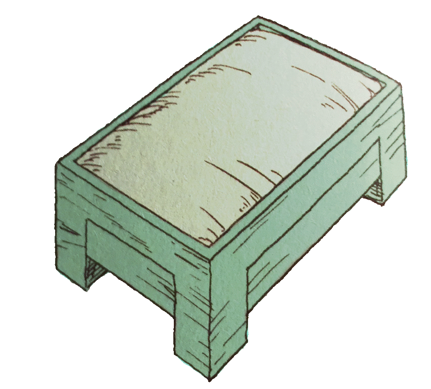

Expandindo sua Casa |
|||
Certo, você herdou uma super fazenda de graça do seu avô... Mas por que parar por aqui!!! Aprimore essa coisa! Eu quero dizer que você nem mesmo tem uma cozinha ou um banheiro, você deveria te-los. Com algum tempo, muita madeira cerrada e um bocado de dinheiro você finalmente vive seu sonho de usar um banheiro do que no meio do mato! Na tabela abaixo entraremos de cabeça em cada aprimoramento da casa no jogo |
 |
Cozinha | Preço: 5000G | Madeira Necessária: 450 |
| Junto com a estufa, a Cozinha é uma das mais importante Extensão no jogo. Com a cozinha você pode armazenar Comida na geladeira, visualizar suas receitas coletadas e ver sua coleção de Power Nuts. Você também vai desbloquear a opção de casamento de uma das candidatas depois de construir a cozinha (ter uma Cozinha é obrigatório para se casar)!! Certifique-se de te-la! | |||
| Baheiro | Preço: 3000G | Madeira Necessária: 300 | |
| O banheiro é uma das extensões mais under-rated. Isso é por que seus benefícios não são facilmente Claro. Um número escondido que calcula a fadiga de Jack é o que determina se você está doente na manhã seguinte. O banheiro ajuda significantemente a reduzir a fadiga. Se você tomar um banho ou usar o banheiro você perderá 10 de fadiga no qual quer dizer que você pode reduzir sua fadiga por 20 pontos todo dia com esta extensão construída. | |||
| Estufa | Preço: 30000G | Madeira Necessária: 580 | |
| A estufa é a extensão mais útil no jogo. Não só por que você pode plantar qualquer plantação todo ano, você pode regar e plantar suas plantações enquanto o tempo está congelado (tempo sempre congela quando você está dentro)!! Isto é magnifico, muda quase seu gameplay inteiro você agora tem mais tempo para brigar com seus animais fora, mais tempo para pescar e mais tempo para investir na Aldeia Flowerbud. Há 25% de chance de sua estufa ser destruída por tufões. | |||
|  | Cama do Bebe | Preço: 1000G | Madeira Necessária: 150 |
| Você se casou? Então você quer ir para o próximo passo e ter um bebe? Fale com os carpinteiros e eles construirão uma cama de bebe! É uma obrigação antes de ter um bebe você deve construir a cama. SE VOCÊ NÃO CONSTRUIR SUA ESPOSA NUNCA FICARÁ GRÁVIDA e assim nunca terá um filho. Você deve ter um filho para ter a foto da festa então construa antes que o tempo acabe! | |||
| 1° Andar | Preço: 2000G | Madeira Necessária: 250 | |
| O primeiro andar é rival do terraço por ser uma das extensões mais inuteis no jogo, mas se você quiser andar no teto da sua casa sem motivo algum então esta extensão é pra você! Construindo esta extensão é obrigatorio para receber a foto da festa no fim do jogo, então é melhor você construir! | |||
| Terraço | Preço: 7000G | Madeira Necessária: 350 | |
| Esta é a mais cara inutilidade no jogo. O terraço só é usado durante sua avaliação durante o verão do terceiro ano. Eu achei que você ganha muito tempo se você manter seu cavalo no terraço depois de ter construido. O cavalo tem dificuldade de encontrar a saida para o terraço então ele fica preso lá permitindo facilmente acha-lo todo dia. | |||
Upgrades Adicionais da sua Casa |
||
Os aprimoramentos abaixo não são considerados extensões. Eles são apenas coisas adicionais da casa que podem ser achados, comprados ou ganhado jogando algum jogo. Alguns só podem ser obtidos ativando certos eventos dentro de um certo tempo no jogo |
| Boneco de Tartaruga | Preço N/A | |
| O boneco de tartaruga é recebido depois de você ganhar o festival do ovo/egg festival pela segunda vez. Ele ficará no canto superior direito da sua TV depois de vencer o festival. Não há beneficios em tê-lo. Apenas um objeto decorativo para sua casa | ||
| Estante | Preço: 2000G | |
| No começo do verão do primeiro ano Rick colocará a estante na sua loja. A estante é muito útil e pode ser usado para armazenar qualquer itens (além das suas ferramentas) que não são comestiveis, como flores por exemplo | ||
| Tapete | Preço: 3000G | |
| No primeiro ano de outono Rick adicionará um outro item na sua loja que ajudará a decorar a sua casa. Alguns tapetes depois da compra o tapete sera colocado do em baixo da mesa onde você come seus bolinhos de arroz toda manhã | ||
| O Invencivel Katori | Preço: N/A | |
| Depois de vencer o festival do mar pela primeira vez você será premiado com uma invencivel katori!!! No qual é apenas um nome chique para um capturador de mosquito!!! Ele não tem outros beneficios do que ser apenas um objeto decorativo para sua casa | ||
 |
Jarro Azul | Preço: 2000G |
| Depois de você encontrar uma rocha azul nas minas e dar a ela a Saibara o artesão, no dia seguinte o jarro azul estará disponivel para compra. Depois de comprar, o jarrp ficará em cima da sua mesa com flores dentro dele. Não há beneficios, mas ele é bastante agradavel | ||
| Desenho de Maria | Preço: N/A | |
| No seu aniversário, se a amizade de Maria está 160 ou mais e ela é seu maior nível de amizade de todas as outras garotas, ela trará pra você um desenho que ela fez para seu aniversário. Não há proposito, mas parece legal em sua casa | ||
| Cavalo de Pelucia | Preço: 1000 Medalhas | |
| O cavalo de pelucia pode ser comprado por 1000 medalhas de corrida na corrida de cavalos que acontece durante o ano. Comprar ele não tem beneficios, mas o cavalo com certeza parece bom no topo de sua estantea | ||
| Pano de Mesa | Preço: 10 Pontos de Rifas | |
| Durante a estação da loteria (25 de Inverno - 29 de Inverno) se você ir para o padeiro e participar da loteria você terá a chance de ganhar um pano de mesa. Se você ganhar o pano de mesa você terá mais +10 de amizade com sua esposa e você ganhará um pano de mesa legal para a mesa de sua casa. | ||
| Esteira de Almoço | Preço: 10 Pontos de Rifas | |
| A esteira de almoço pode ser ganha durante a estação (25 de Inverno - 29 de Inverno) no padeiro se você tem pelo menos 10 pontos de rifas no seu cartão de padeiro. Se você vencer deles eles não server para nenhum proposito fora olhar para sua agradavel mesa de cozinha | ||
| Caneca | Preço: 10 Pontos de Rifas | |
| A caneca também é ganha durante a estação da rufa (25 de Inverno - 29 Inverno) no padeiro. Se você ganhar ela você ganhará 8 de amizade com sua esposa. Mais do que isso não tem mais nenhum motivo do olhar em sua cozinha | ||
 |
Almofada | Preço: 10 Pontos de Rifas |
| A almofada está disponivel na floricultura de Lilia durante a estação da rifa (25 de Inverno - 29 de Inverno) Se você ganhar a almofada na loteria ela é fica na sua cama como um travesseiro. Agora cada hora que você dorme você recuperará 3 de fadiga ao invés de 2 | ||
| Casa Nova do Cachorro | Preço: 3000 Medalhas | |
| No inverno do dia 19 de cada ano a corrida do cachorro assume o lugar da Aldeia Flowerbud. Se você puder adquirir 3000 medalhas antes ou nesta data então você pode comprar a nova casa do cachorro do prefeito na mesa de prêmios A casa nova do cachorro não tem nenhum beneficios com ela do que tornar a casa do cachorro super bonita | ||
| Estabulo Novo | Preço: 3000 Medalhas | |
| Durante a corrida de cavalos, no dia 17 da primavera ou no dia 28 de Outono, você pode ter um novo estabulo do prefeito na mesa de prêmios se você acumulou pelo menos 3000 medalhas. Infelizmente nada muda com o novo estabulo além da cor do telhado. Ele muda de cor azul para cor vermelha e é só isso. | ||